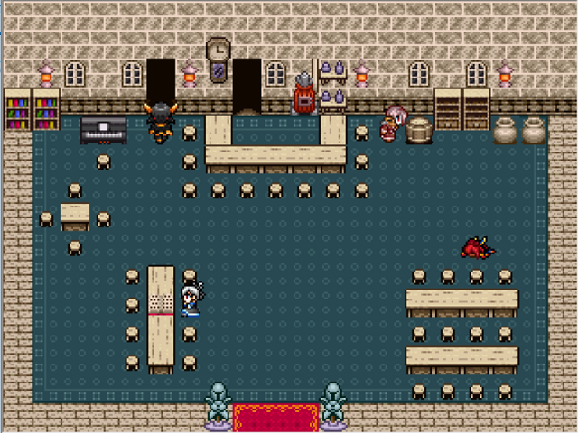

 |
|
| 作者：雪島 | |
| ツクール：2000 | |
| ジャンル：見るゲ | |
| 配信/投稿：自己/責任 | |
| keyword：作成中のミカンですよ？それでも見ます？ | |
| 投票：投票はこちら | |
| 作者コメント： ３年前にエターなった作品の発掘＆加筆作。 実質ワンマップのみ、センスも知識も当時相応という超省エネ仕様ですが、よろしければポテチ片手にどうぞ。 未完成でも出来ている所までを提出します。 →予告通りの未完成提出。完全にエターなるのが嫌でGOしただけですので、本気で暇な方だけどうぞ。 | |
| 管理人コメント： 作りかけだった昔の作品をサルベージ、私はそういうの好きですよ。 |
|
| 更新履歴：01/27遅刻提出 | |
| ダウンロード / 感想掲示板 | |
| 前の作品 / 次の作品 / TOPへ戻る | |